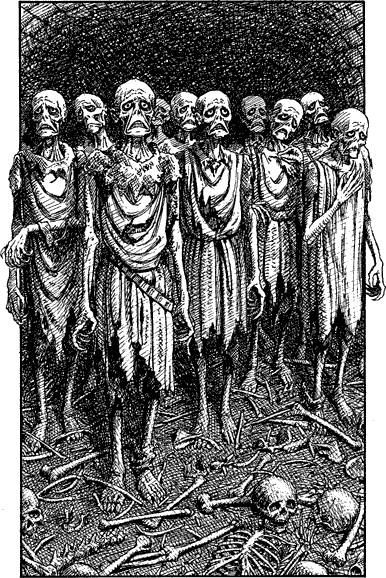

218
In the dim distance you see a score of creatures stumbling along the tunnel. You magnify your gaze and discern that they are vaguely human in form, although hairless, and lean and stringy, as if from starvation. Their toes and fingers end in horny, hooked claws and their large eyes are deep set in skeletal faces, etched by untold years of pain and anguish. You bring to bear your innate psychic skills and are shocked by what you discover.
Your senses reveal that these creatures were once human soldiers in the armies of the Freeland Alliance. Captured in battle and brought to Kaag long ago, they have endured unspeakable experiments at the hands of the Nadziranim. Now, no longer of use to those evil magicians, these pitiful victims have been left to wander the forgotten passages of this foul city, united in undeath.

When the undead soldiers are twenty yards distant you attempt to communicate with them telepathically. You sense that the one who is leading the group radiates a faint psychic aura and you hope that he may know the whereabouts of your captive friend Banedon. At first your questions elicit no reply; then, when your eyes meet, you feel a wave of despair wash over you as suddenly you tap into the agony of this creature’s existence. (Lose two ENDURANCE points due to psychic shock.) As the effects of the shock fade, you hear a ghostly voice echoing thinly in your mind.
Yes … I know of whom you seek … it croaks. The Sommlending wizard is imprisoned here in Kaag … in Zagarna’s courtroom …
You ask the wretched zombie for directions to Zagarna’s courtroom but the only help he can offer is to tell you that it is ‘many levels above’.
The pitiful group part in two to allow you to pass. As you move through them, your hatred of the Nadziranim blazes anew when you see upon the bodies of these once-human soldiers the terrible scars left by the cruel experiments. Filled with anger and remorse you hurry away, silently fearful that Banedon may already have suffered a similar fate.